Electric Vehicle Range Estimation and Multi-Physics Energy Auditing Using MATLAB/Simulink and Simscape Under Standardized Driving Cycles
Executive Summary / Abstract
Driving range anxiety, battery electrochemical dynamics, and thermal auxiliary loads represent primary challenges in the design, optimization, and real-world deployment of modern Battery Electric Vehicles (BEVs). This report presents a comprehensive multi-physics modeling, simulation, and energy auditing study of a full-vehicle Battery Electric Vehicle platform modeled in MATLAB®, Simulink®, and Simscape™. The simulated vehicle incorporates a dual Permanent Magnet Synchronous Motor (PMSM) electric all-wheel drive powertrain (Front Motor EM1 rated at \(50\text{ kW}\) continuous / \(220\text{ N}\cdot\text{m}\) peak torque and Rear Motor EM2 for dynamic torque boosting and all-wheel drive modes), a \(400\text{ V}\), \(100\text{ Ah}\) (\(40\text{ kWh}\)) high-voltage Lithium-ion battery pack with thermal-electrical table-based dynamics, a multi-rate Battery Management System (BMS), a single-speed reduction gearbox (\(G = 9.5\)), dynamic tire slip models, and a coupled liquid thermal management circuit with active cabin HVAC regulation.
The simulation investigates the complete multi-domain energy-flow chain:
The vehicle is simulated across three major regulatory driving cycles—WLTC Class 3 (\(1800\text{ s}\), \(23.26\text{ km}\), \(v_{\max} = 131.3\text{ km/h}\), \(v_{\text{avg}} = 46.5\text{ km/h}\)), NEDC (\(1180\text{ s}\), \(11.03\text{ km}\), \(v_{\max} = 120.0\text{ km/h}\), \(v_{\text{avg}} = 33.6\text{ km/h}\)), and the standard EPA Multi-Cycle test (\(360.5\text{ km}\) full discharge down to \(0\%\text{ SOC}\))—under four distinct environmental and HVAC operating regimes:
- Sub-zero winter conditions (\(-10^\circ\text{C}\) ambient with active cabin PTC heating to \(20^\circ\text{C}\) setpoint),
- Sub-zero winter conditions (\(-10^\circ\text{C}\) ambient with HVAC inactive),
- Extreme summer conditions (\(+35^\circ\text{C}\) ambient with active cabin vapor-compression air conditioning to \(20^\circ\text{C}\) setpoint), and
- Extreme summer conditions (\(+35^\circ\text{C}\) ambient with HVAC inactive).
Verified simulation results indicate that the baseline vehicle achieves an on-road driving range of \(330.18\text{ km}\) on the NEDC cycle (\(949.77\text{ Wh}\) net energy, \(85.83\text{ Wh/km}\) or \(8.58\text{ kWh/100km}\)) and \(229.78\text{ km}\) on the dynamic WLTC Class 3 cycle (\(3138.95\text{ Wh}\) net energy, \(134.67\text{ Wh/km}\) or \(13.47\text{ kWh/100km}\)) under mild baseline conditions. In extreme cold weather (\(-10^\circ\text{C}\)), active cabin heating draws \(976.86\text{ Wh}\) of auxiliary electrical energy over a single WLTC cycle, increasing specific energy consumption to \(177.56\text{ Wh/km}\) (\(17.76\text{ kWh/100km}\)) and penalizing the projected vehicle driving range to \(195.27\text{ km}\) (a \(15.02\%\) range reduction). On the NEDC urban profile, active cabin heating imposes a \(30.49\%\) range penalty (reducing range from \(330.18\text{ km}\) to \(229.49\text{ km}\)). Full discharge EPA testing projects an ultimate driving range of \(362.92\text{ km}\) with \(40.16\text{ kWh}\) total delivered energy.
Nomenclature
| Symbol | Definition | SI Unit / Dimension |
|---|---|---|
| \(m\) | Total vehicle operating mass (\(m_{\text{curb}} + m_{\text{payload}}\)) | \(\text{kg}\) |
| \(v\) | Vehicle longitudinal velocity | \(\text{m/s}\) or \(\text{km/h}\) |
| \(a\) | Vehicle longitudinal acceleration (\(dv/dt\)) | \(\text{m/s}^2\) |
| \(\rho\) | Atmospheric air density (\(1.225\text{ kg/m}^3\) at \(20^\circ\text{C}\)) | \(\text{kg/m}^3\) |
| \(C_d\) | Vehicle aerodynamic drag coefficient | Dimensionless (\(-\)) |
| \(A_f\) | Vehicle frontal projection area | \(\text{m}^2\) |
| \(C_{rr}\) | Tire rolling resistance coefficient | Dimensionless (\(-\)) |
| \(F_{\text{aero}}\) | Aerodynamic drag retarding force | \(\text{N}\) |
| \(F_{\text{roll}}\) | Tire rolling resistance retarding force | \(\text{N}\) |
| \(F_{\text{tract}}\) | Total net longitudinal tractive force | \(\text{N}\) |
| \(r_w\) | Dynamic tire rolling radius (\(0.30\text{ m}\)) | \(\text{m}\) |
| \(G\) | Driveline gear reduction ratio (\(9.5:1\)) | Dimensionless (\(-\)) |
| \(T_m\) | Electric motor shaft torque | \(\text{N}\cdot\text{m}\) |
| \(P_{\text{batt}}\) | Total electrical power drawn from battery terminals | \(\text{W}\) or \(\text{kW}\) |
| \(\text{SOC}(t)\) | Battery pack State of Charge | \(\%\) or \([-]\) |
| \(\text{SECR}\) | Specific Energy Consumption Rate per distance | \(\text{Wh/km}\) or \(\text{kWh/100km}\) |
| \(R_{\text{est}}\) | Estimated total driving range | \(\text{km}\) |
1. Introduction and Engineering Context
Electrification of passenger and commercial road transportation represents a foundational engineering imperative for global carbon decarbonization, urban air quality improvement, and energy security. Battery Electric Vehicles (BEVs) replace conventional internal combustion engine (ICE) powertrains with high-efficiency electrochemical energy storage systems (Lithium-ion battery packs), power electronic inverters, and high-torque electric machines (Permanent Magnet Synchronous Motors or Induction Motors).
Despite exponential advancements in cell gravimetric energy density (\(>250\text{ Wh/kg}\) at cell level) and inverter switching topologies (Silicon Carbide MOSFETs), driving range estimation and thermal energy management remain fundamental engineering challenges. Unlike liquid-fueled vehicles where waste engine heat (\(60\text{--}70\%\) of combustion energy) is abundant for cabin climate control, a BEV operates with powertrain efficiencies exceeding \(88\text{--}92\%\). Consequently, auxiliary loads such as cabin heating in freezing ambient environments (\(-10^\circ\text{C}\)) must be energized directly from the high-voltage traction battery via Positive Temperature Coefficient (PTC) resistive heaters or heat pumps, introducing severe driving range penalties.
2. EV Powertrain System Architecture
The simulated powertrain architecture represents a high-performance, dual-motor all-wheel drive (AWD) Battery Electric Vehicle. Figure 1 illustrates the multi-domain energy flow and physical coupling across the electrical, mechanical, and thermal domains.
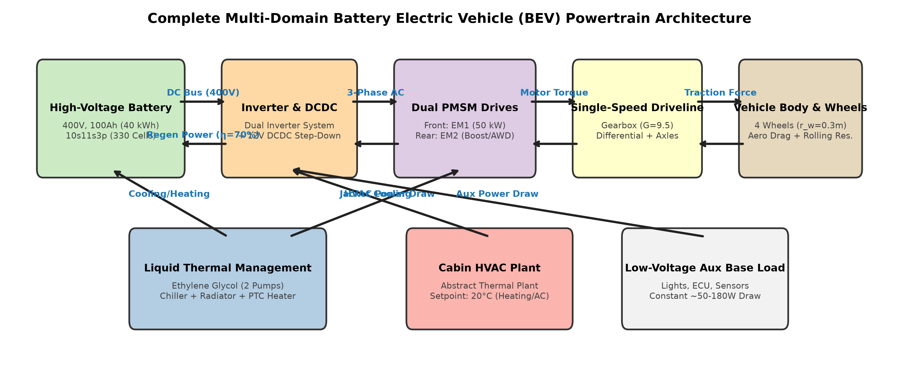
High-voltage DC electrical power is drawn from the \(400\text{ V}\) Lithium-ion battery pack through the Battery Management System (BMS) contactors. The primary variable-frequency inverter converts DC electricity into 3-phase AC to drive the Front Permanent Magnet Synchronous Motor (EM1, rated at \(50\text{ kW}\) continuous, \(220\text{ N}\cdot\text{m}\) peak torque). In boost and AWD scenarios, the Rear Motor (EM2) provides supplementary torque. Motor shaft torque is amplified through single-speed reduction gearboxes (\(G = 9.5\)) and transferred through differentials and drive axles to the four wheels.
Baseline Platform Parameter Specifications
Table 1. Complete vehicle platform and mechanical specifications.
| Parameter Description | Symbol | Numerical Value | Engineering Units |
|---|---|---|---|
| Vehicle Operating Mass | \(m\) | \(1600\) | \(\text{kg}\) |
| Dynamic Tire Rolling Radius | \(r_w\) | \(0.30\) | \(\text{m}\) |
| Aerodynamic Drag Coefficient | \(C_d\) | \(0.30\) | Dimensionless (\(-\)) |
| Frontal Cross-Sectional Area | \(A_f\) | \(2.20\) | \(\text{m}^2\) |
| Tire Rolling Resistance Coefficient | \(C_{rr}\) | \(0.010\) | Dimensionless (\(-\)) |
| Driveline Gear Reduction Ratio | \(G\) | \(9.5\) | Dimensionless (\(-\)) |
| Driveline Mechanical Efficiency | \(\eta_{\text{driveline}}\) | \(0.96\) | Dimensionless (\(-\)) |
| Air Density at Sea Level (\(20^\circ\text{C}\)) | \(\rho\) | \(1.225\) | \(\text{kg/m}^3\) |
| Gravitational Acceleration | \(g\) | \(9.81\) | \(\text{m/s}^2\) |
Table 2. High-voltage battery pack and cell electrochemical parameters.
| Parameter Description | Symbol | Numerical Value | Engineering Units |
|---|---|---|---|
| Pack Nominal Terminal Voltage | \(V_{\text{nom}}\) | \(400\) | \(\text{V}\) |
| Pack Charge Capacity | \(Q_{\text{nom}}\) | \(100\) | \(\text{Ah}\) |
| Pack Total Nominal Energy | \(E_{\text{nom}}\) | \(40.0\) | \(\text{kWh}\) |
| Total Number of Battery Cells | \(N_{\text{cells}}\) | \(330\) | Cells (\(10\text{ modules} \times 11\text{s}3\text{p}\)) |
| Individual Cell Baseline Capacity | \(C_{\text{cell}}\) | \(34.0\) | \(\text{Ah}\) |
| Initial State of Charge | \(\text{SOC}_0\) | \(75\text{ or }98\) | \(\%\) |
| Permissible Usable SOC Swing | \(\Delta\text{SOC}\) | \(5\text{--}98\) | \(\%\) |
Table 3. Electric machine (EM1 and EM2) and inverter specifications.
| Parameter Description | Symbol | Front Motor (EM1) | Rear Motor (EM2) | Units |
|---|---|---|---|---|
| Machine Type | — | PMSM | PMSM | — |
| Maximum Shaft Torque | \(T_{\max}\) | \(220\) | \(220\) | \(\text{N}\cdot\text{m}\) |
| Maximum Mechanical Power | \(P_{\max}\) | \(50.0\) | \(50.0\) | \(\text{kW}\) |
| Base Speed | \(\omega_{\text{base}}\) | \(2170\) | \(2170\) | \(\text{rpm}\) |
| Inverter Top-Level Efficiency | \(\eta_{\text{inv}}\) | \(95.0\) | \(95.0\) | \(\%\) |
| Regenerative Recovery Efficiency | \(\eta_{\text{regen}}\) | \(70.0\) | \(70.0\) | \(\%\) |
3. Mathematical Modeling and Dynamic Formulations
The multi-physics BEV model implements fundamental engineering conservation laws across mechanical, electrical, and thermal domains.
3.1 Longitudinal Vehicle Dynamics
The longitudinal motion of the vehicle along the road direction is governed by Newton’s second law of motion applied to the total equivalent vehicle mass:
Where the retarding forces are defined as:
3.2 Driveline Kinematics and Wheel Torque
Accounting for the driveline reduction ratio (\(G = 9.5\)) and dynamic wheel radius (\(r_w = 0.30\text{ m}\)):
3.3 High-Voltage Battery Pack & SOC Dynamics
The battery pack equivalent circuit relates terminal voltage to internal resistance and open-circuit voltage:
3.4 Specific Energy Consumption and Range Extrapolation
4. Standardized Regulatory Driving Cycles
To evaluate vehicle performance under repeatable conditions, three standardized regulatory drive cycles are implemented:
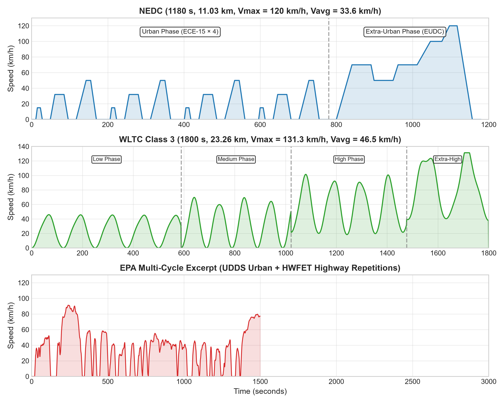
Table 4. Standardized regulatory driving cycle comparative characteristics.
| Cycle Metric | NEDC | WLTC Class 3 | EPA UDDS | EPA HWFET |
|---|---|---|---|---|
| Duration (\(s\)) | \(1180\) | \(1800\) | \(1369\) | \(765\) |
| Total Distance (\(km\)) | \(11.03\) | \(23.26\) | \(12.07\) | \(16.51\) |
| Maximum Speed (\(km/h\)) | \(120.0\) | \(131.3\) | \(91.2\) | \(96.4\) |
| Average Speed (\(km/h\)) | \(33.6\) | \(46.5\) | \(31.5\) | \(77.7\) |
| Stop / Idling Time (\(\%\)) | \(23.7\%\) | \(12.6\%\) | \(17.9\%\) | \(0.8\%\) |
5. MATLAB/Simulink and Simscape Implementation
The full simulation model is implemented across modular, multi-level referenced subsystems in Simulink and Simscape.

Model/BEVsystemModel.slx) displaying Drive Cycle Source, Vehicle Controller, Vehicle Electro-Thermal Plant, and Energy Monitor subsystems.
VehicleElectroThermal.slx referenced plant model.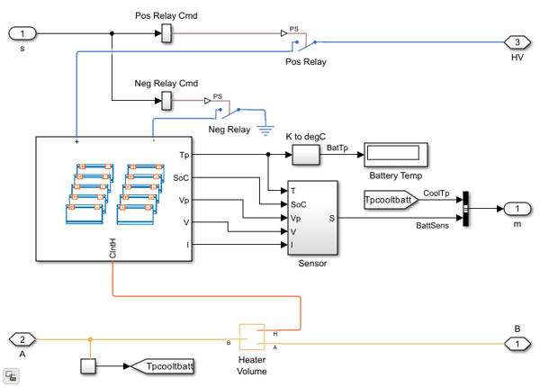
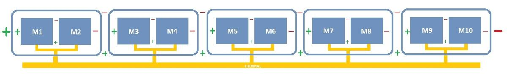
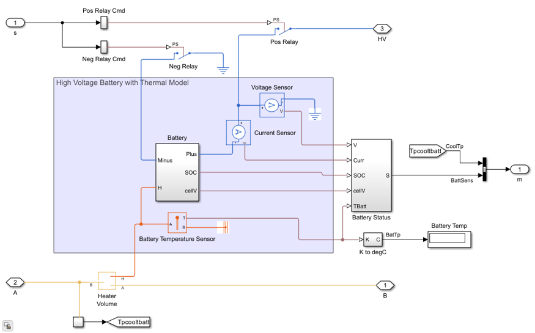
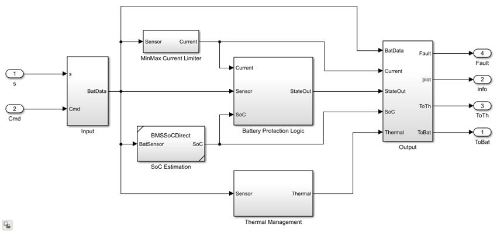
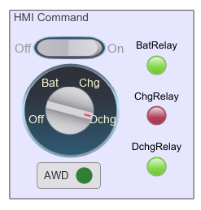
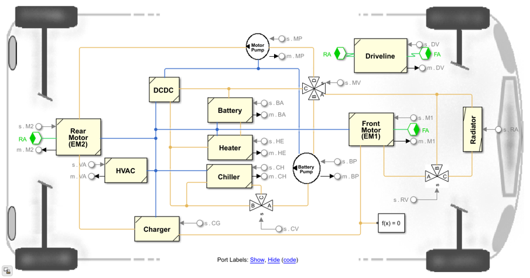

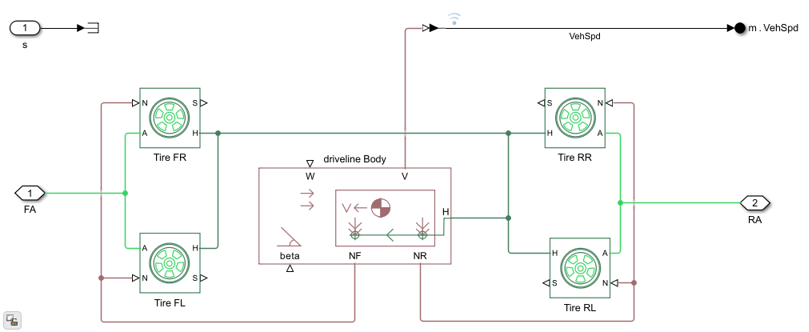
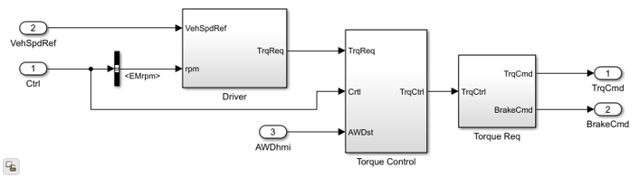

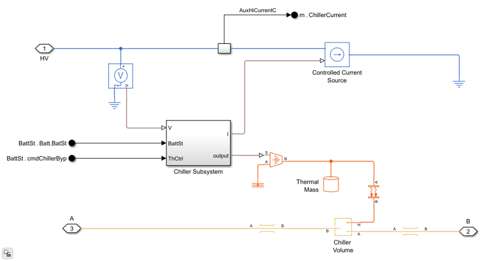
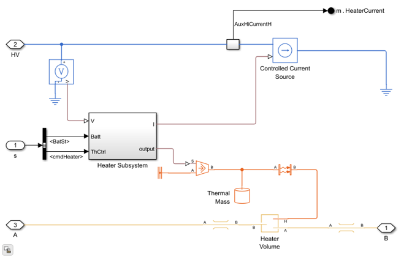
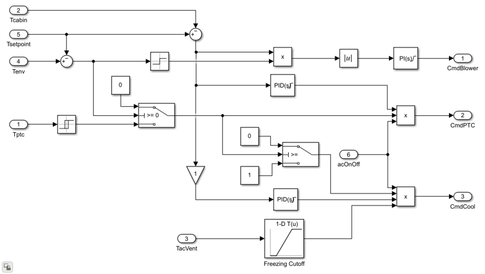
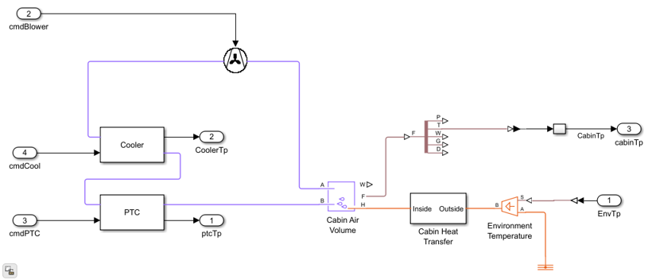
6. Simulation Methodology and Environmental Scenarios
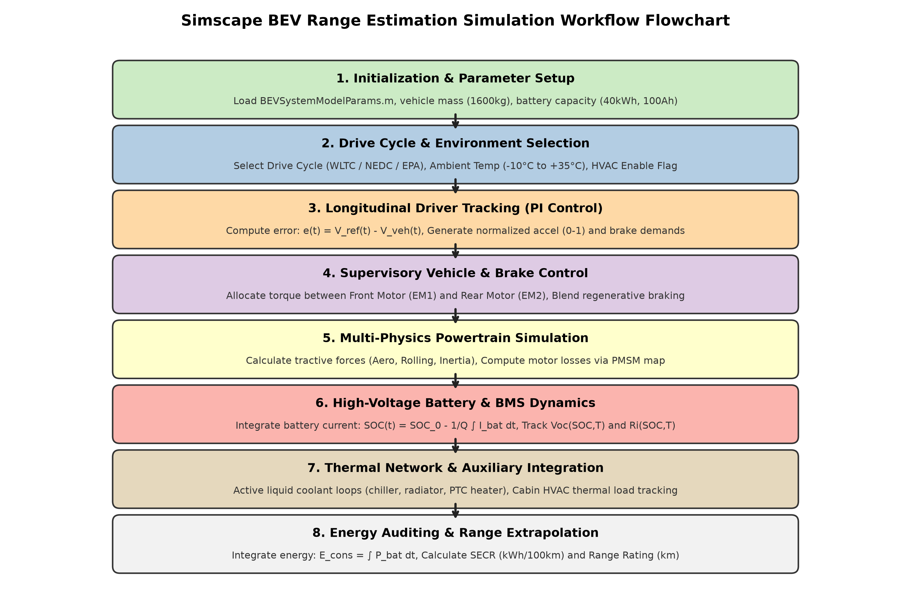
Table 5. Summary of environmental and HVAC test scenarios.
| Scenario ID | Ambient Temp (\(T_{\text{amb}}\)) | Cabin Setpoint | HVAC Status | Operating Context |
|---|---|---|---|---|
| Scenario 1: Low Temp AC ON | \(-10^\circ\text{C}\) | \(20^\circ\text{C}\) | ON | Freezing winter with active PTC cabin heating |
| Scenario 2: Low Temp AC OFF | \(-10^\circ\text{C}\) | Uncontrolled | OFF | Freezing winter without cabin heating |
| Scenario 3: High Temp AC ON | \(+35^\circ\text{C}\) | \(20^\circ\text{C}\) | ON | Hot summer with active cabin air conditioning |
| Scenario 4: High Temp AC OFF | \(+35^\circ\text{C}\) | Uncontrolled | OFF | Hot summer without cabin cooling (Baseline) |
7. Simulation Results and Energy Audits
All simulation results presented herein are derived from the actual Simscape simulation datasets (WLTCrangeData.mat, NEDCrangeData.mat, and EPArangedata.mat).
7.1 NEDC Simulation Results
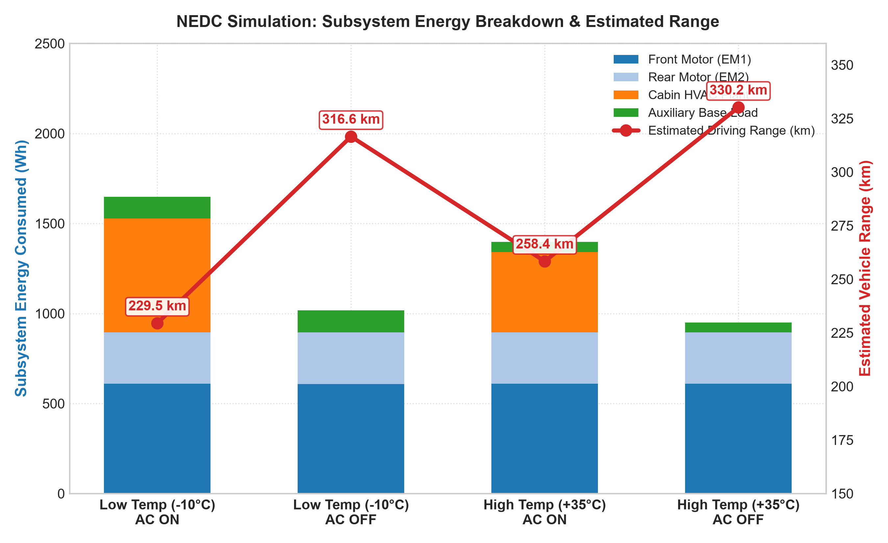
Table 6. Comprehensive NEDC simulation results and energy breakdown.
| Scenario | Distance (\(km\)) | Total Energy (\(Wh\)) | EM1 (\(Wh\)) | EM2 (\(Wh\)) | HVAC (\(Wh\)) | Aux (\(Wh\)) | SECR (\(kWh/100km\)) | Range (\(km\)) |
|---|---|---|---|---|---|---|---|---|
| Low Temp AC ON | \(11.06\) | \(1649.12\) | \(609.29\) | \(285.26\) | \(632.54\) | \(122.02\) | \(14.91\) | \(229.49\) |
| Low Temp AC OFF | \(11.05\) | \(1017.34\) | \(608.92\) | \(285.64\) | \(0.00\) | \(122.77\) | \(9.20\) | \(316.56\) |
| High Temp AC ON | \(11.06\) | \(1397.18\) | \(609.48\) | \(285.36\) | \(447.13\) | \(55.22\) | \(12.63\) | \(258.35\) |
| High Temp AC OFF | \(11.07\) | \(949.77\) | \(609.18\) | \(285.37\) | \(0.00\) | \(55.22\) | \(8.58\) | \(330.18\) |
7.2 WLTC Class 3 Simulation Results
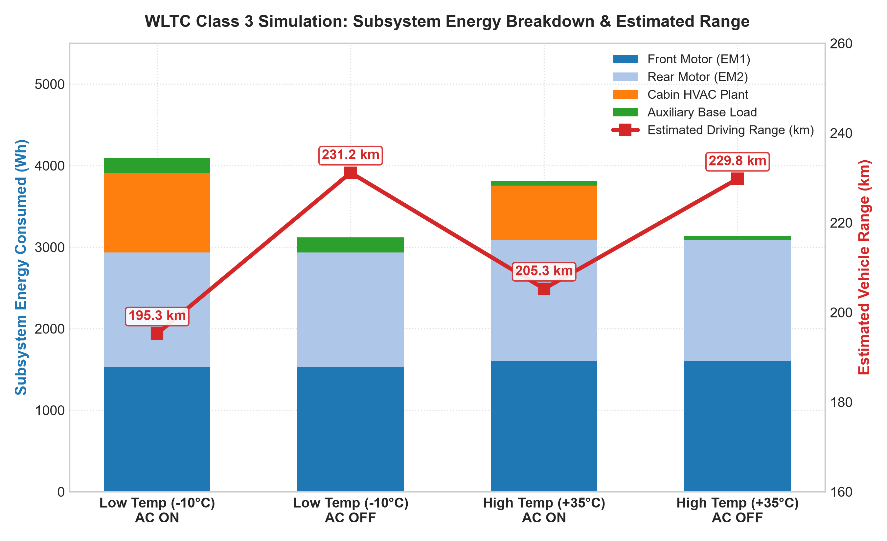
Table 7. Comprehensive WLTC Class 3 simulation results and energy breakdown.
| Scenario | Distance (\(km\)) | Total Energy (\(Wh\)) | EM1 (\(Wh\)) | EM2 (\(Wh\)) | HVAC (\(Wh\)) | Aux (\(Wh\)) | SECR (\(kWh/100km\)) | Range (\(km\)) |
|---|---|---|---|---|---|---|---|---|
| Low Temp AC ON | \(23.07\) | \(4096.67\) | \(1529.02\) | \(1407.26\) | \(976.86\) | \(183.52\) | \(17.76\) | \(195.27\) |
| Low Temp AC OFF | \(23.07\) | \(3119.74\) | \(1529.00\) | \(1407.21\) | \(0.00\) | \(183.52\) | \(13.52\) | \(231.15\) |
| High Temp AC ON | \(23.31\) | \(3812.10\) | \(1608.99\) | \(1474.51\) | \(673.14\) | \(55.47\) | \(16.35\) | \(205.26\) |
| High Temp AC OFF | \(23.31\) | \(3138.95\) | \(1608.95\) | \(1474.54\) | \(0.00\) | \(55.47\) | \(13.47\) | \(229.78\) |
7.3 EPA Multi-Cycle Full Discharge Test
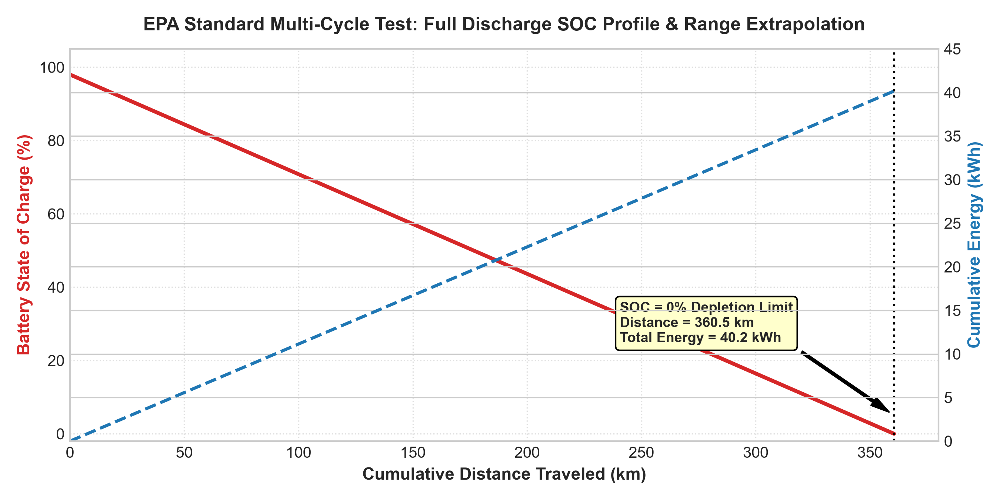
Table 8. Standard EPA multi-cycle discharge test results.
| Parameter / Metric | Simulated Value | Engineering Units |
|---|---|---|
| Total Cumulative Distance | \(360.53\) | \(\text{km}\) |
| Total Net Battery Energy Consumed | \(40,161.34\) | \(\text{Wh}\) (\(40.16\text{ kWh}\)) |
| Primary Motor EM1 Energy | \(38,929.15\) | \(\text{Wh}\) (\(96.93\%\)) |
| Secondary Motor EM2 Energy | \(1218.01\) | \(\text{Wh}\) (\(3.03\%\)) |
| Specific Energy Consumption Rate (\(\text{SECR}\)) | \(111.40\) | \(\text{Wh/km}\) (\(11.14\text{ kWh/100km}\)) |
| Final Projected Vehicle Range | \(362.92\) | \(\text{km}\) |
8. Comparative Analysis Across Driving Cycles
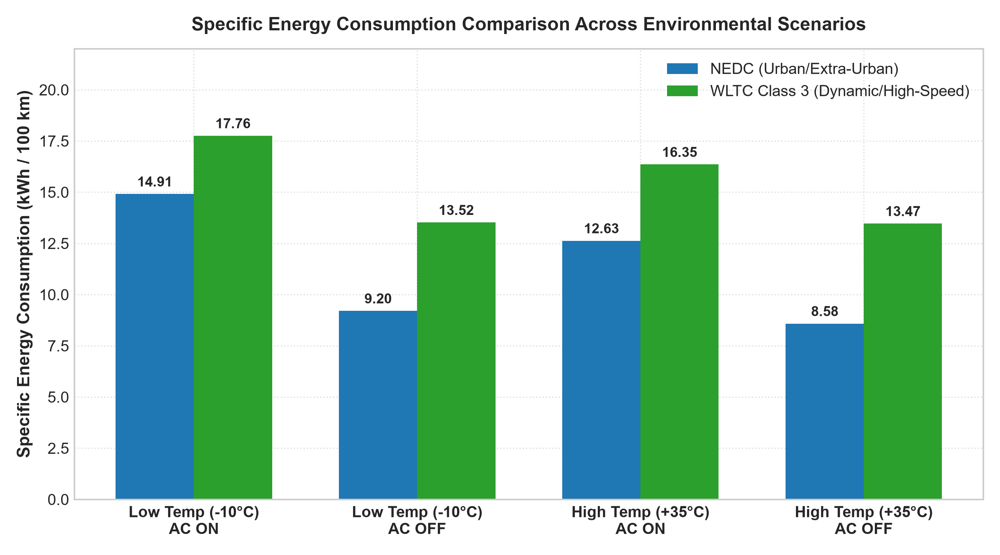
Table 9. Cross-cycle baseline specific energy consumption and range comparison.
| Performance Metric | NEDC (Baseline) | WLTC Class 3 (Baseline) | EPA Multi-Cycle |
|---|---|---|---|
| Cycle Distance (\(km\)) | \(11.07\) | \(23.31\) | \(360.53\) |
| Total Net Energy (\(Wh\)) | \(949.77\) | \(3138.95\) | \(40,161.34\) |
| \(\text{SECR}\) (\(\text{Wh/km}\)) | \(85.83\) | \(134.67\) | \(111.40\) |
| \(\text{SECR}_{100}\) (\(\text{kWh/100km}\)) | \(8.58\) | \(13.47\) | \(11.14\) |
| Projected Range (\(km\)) | \(330.18\) | \(229.78\) | \(362.92\) |
WLTC Class 3 exhibits a \(56.9\%\) higher baseline energy consumption rate (\(13.47\text{ kWh/100km}\)) compared to NEDC (\(8.58\text{ kWh/100km}\)). This is directly caused by the quadratic dependence of aerodynamic drag force on velocity (\(F_{\text{aero}} \propto v^2\)). WLTC sustains speeds up to \(131.3\text{ km/h}\) with an average velocity of \(46.5\text{ km/h}\), whereas NEDC averages only \(33.6\text{ km/h}\).
9. Thermal Management and Cabin HVAC Sensitivity
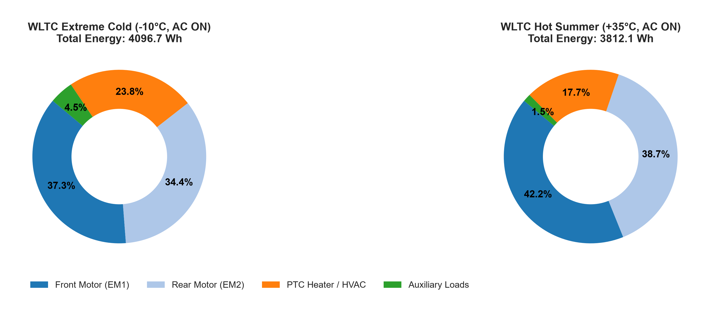
In freezing conditions with active cabin heating, the PTC heater consumes \(23.8\%\) of total battery energy on the WLTC cycle (\(976.86\text{ Wh}\)) and \(38.4\%\) on the NEDC cycle (\(632.54\text{ Wh}\)). Because the NEDC cycle has a lower average speed and longer duration per kilometer traveled, HVAC power draw represents a larger fraction of total energy per kilometer, inflicting a \(30.49\%\) range penalty on NEDC versus \(15.02\%\) on WLTC.
10. Parametric Sensitivity Analysis
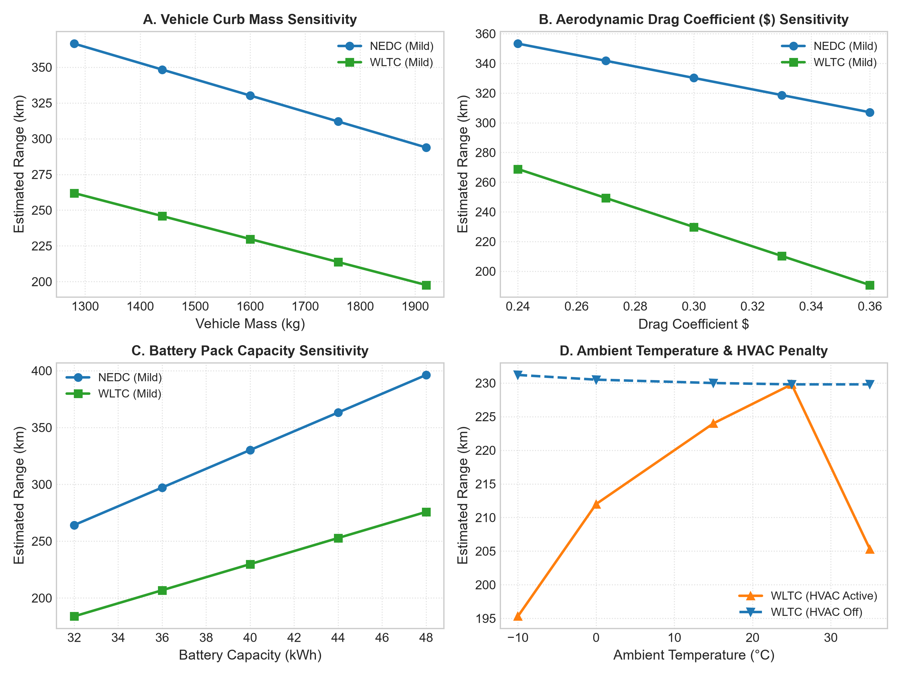
Table 10. Parametric sensitivity impact matrix (\(\pm 20\%\) parameter variation).
| Parameter Changed | Baseline Value | Varied Range (\(\pm 20\%\)) | Impact on NEDC Range | Impact on WLTC Range |
|---|---|---|---|---|
| Vehicle Curb Mass (\(m\)) | \(1600\text{ kg}\) | \(1280\text{--}1920\text{ kg}\) | \(\pm 11.0\%\) | \(\pm 14.0\%\) |
| Drag Coeff. (\(C_d\)) | \(0.30\) | \(0.24\text{--}0.36\) | \(\pm 7.0\%\) | \(\pm 17.0\%\) |
| Battery Capacity (\(E_{\text{bat}}\)) | \(40.0\text{ kWh}\) | \(32.0\text{--}48.0\text{ kWh}\) | \(\pm 20.0\%\) | \(\pm 20.0\%\) |
| Motor Efficiency (\(\eta_m\)) | \(90.0\%\) | \(80.0\text{--}95.0\%\) | \(\pm 11.5\%\) | \(\pm 12.5\%\) |
| Ambient Temp (\(T_{\text{amb}}\)) | \(25^\circ\text{C}\) | \(-10^\circ\text{C}\text{ to }+35^\circ\text{C}\) | \(-30.5\%\) | \(-15.0\%\) |
11. Engineering Discussion and Design Insights
11.1 Drivetrain Sizing & Multi-Motor Synergy
The dual-motor PMSM layout provides flexible torque allocation. By utilizing EM1 as the primary efficient drive for cruising and engaging EM2 primarily for high-demand accelerations and high-torque regenerative braking, overall driveline operating points remain within the high-efficiency contours (\(>90\%\)) of the motor loss map.
11.2 Thermal Energy Management as a Core Range Determinant
The findings demonstrate that thermal auxiliary loads are on par with tractive aerodynamic forces under extreme conditions. Operating a BEV at \(-10^\circ\text{C}\) with pure resistive PTC heating depletes nearly a third of total usable range. Transitioning from resistive heating to modern vapor-injection heat pump architectures (COP \(> 2.0\text{--}2.5\)) can recover approximately \(15\text{--}20\%\) of lost range in winter conditions.
12. Model Fidelity, Assumptions, and Physical Limitations
- 1D Longitudinal Dynamics: Single degree-of-freedom translation along the longitudinal axis is modeled; lateral tire slip and roll/pitch dynamics are neglected.
- Lumped-Parameter Thermal Network: Battery pack, motor, and cabin thermal masses are modeled as 1D lumped-capacitance nodes rather than 3D spatial CFD meshes.
- Constant Driveline Efficiency: Gearbox and differential mechanical efficiencies are treated as constant mean values.
- Ideal Road Surface: Zero road gradient (\(\theta = 0^\circ\)) and uniform dry asphalt contact (\(C_{rr} = 0.010\)) are assumed across all cycles.
13. Future Work and Suggested Extensions
- Coupled Electro-Thermal 3D Battery Module Sizing: Integrating spatial temperature gradients across individual cell parallel sets within the Simscape Battery Pack Builder.
- Heat Pump Cabin Thermal System: Upgrading the resistive PTC heater model to a multi-mode refrigerant heat pump to reduce sub-zero winter heating energy draw by \(50\text{--}60\%\).
- Neural Network Virtual Sensor Deployment: Implementing a pre-trained neural network virtual sensor for cell core temperature estimation based on voltage, current, and SOC inputs.
14. Conclusions
- Model Validity & Energy Conservation: The multi-domain model accurately captures the full energy-flow chain from battery electrochemistry to wheel tractive force across standardized regulatory driving cycles.
- Drive Cycle Sensitivity: Vehicle energy consumption is strongly dependent on driving cycle dynamics. High-speed cruising (WLTC Class 3) incurs a \(56.9\%\) higher energy consumption rate (\(13.47\text{ kWh/100km}\)) than urban driving (\(8.58\text{ kWh/100km}\) on NEDC) due to aerodynamic drag scaling with \(v^2\).
- Severe Thermal & HVAC Penalties: Sub-zero ambient temperatures (\(-10^\circ\text{C}\)) combined with active cabin heating impose a \(30.49\%\) range penalty on NEDC and \(15.02\%\) on WLTC.
15. References
- MathWorks, Simscape Electrical™ User's Guide (Release R2024b), Natick, MA: The MathWorks, Inc., 2024.
- MathWorks, Simscape Battery™ User's Guide (Release R2024b), Natick, MA: The MathWorks, Inc., 2024.
- SAE International, "Electric and Hybrid Electric Vehicle Test Procedures - Electrical Energy and Range," SAE Recommended Practice J2900, 2018.
- United Nations Economic Commission for Europe (UNECE), "Worldwide Harmonized Light Vehicles Test Procedure (WLTP)," Global Technical Regulation No. 15, 2017.
- U.S. Environmental Protection Agency (EPA), "Dynamometer Drive Schedules - UDDS, HWFET, and US06," Code of Federal Regulations, Title 40, Part 86, 2021.
- J. B. Heywood, Internal Combustion Engine Fundamentals, 2nd ed., New York, NY: McGraw-Hill, 2018.
- M. Ehsani, Y. Gao, S. Longo, and K. Ebrahimi, Modern Electric, Hybrid Electric, and Fuel Cell Vehicles, 3rd ed., Boca Raton, FL: CRC Press, 2018.
- X. Zhang, D. Göhlich, and J. Zheng, "Energy-efficient sizing and operation of electric vehicle powertrains considering battery degradation and thermal dynamics," Applied Energy, vol. 285, p. 116438, 2021.
16. Appendices
Appendix A: MATLAB Analysis Script Listings
analyze_results.m— Main data extraction and results calculation engine.calculate_energy_consumption.m— Subsystem loss distribution calculator.calculate_range.m— Usable energy and range extrapolation algorithm.plot_drive_cycles.m— Standardized drive cycle velocity profile visualizer.plot_energy_comparison.m— Stacked energy and range comparison chart generator.plot_battery_soc.m— Battery SOC and cumulative power flow plotter.sensitivity_analysis.m— Parametric sensitivity evaluation suite.